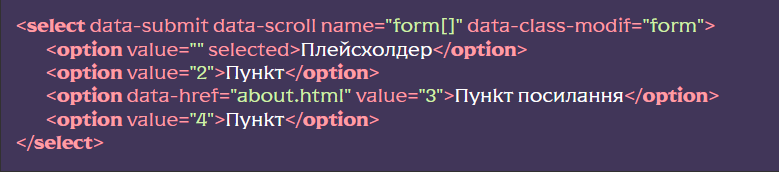
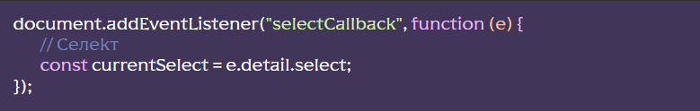

Підключення модуля
[HTML] У потрібному місці викликати сніпет sel, редагувати HTML-код селекту під свої потреби
[SCSS] Розкоментувати рядок @import “select”; у файлі src/scss/base/forms/forms.scss – це підключить базові стилі селекту, відредагувати під свої потреби
[JS] Розкоментувати рядок import ‘./libs/select.js’ у файлі js/app.js
Налаштування та функціонал модуля
Для підключення того чи іншого функціоналу модуля використовуються різні HTML-атрибути
Атрибути для тегу <SELECT>:
- multiple мультивибір
- disabled недоступний
- data-class-modif=ім’я класса – модифікатор до конкретного селекту. У результаті вийде select select_ім’я класу
- data-tags – режим тегів (тільки для multiple) дозволяє вставляти вибрані значення у вигляді тегів з хрестиком для видалення. Також є можливість виводити ці теги в будь-якому зазначеному місці, вказавши селектор блоку як значення атрибуту
- data-scroll включить прокрутку для списку, додатково можна підключити кастомний скролл simplebar в js/app.js. Зазначене число для атрибуту обмежить висоту контейнера випадаючого списку
- data-checkbox(в роботі) – стилізація елементів по checkbox (тільки для multiple)
- data-show-selected – вимикає приховування вибраного елемента
- data-search – дозволяє шукати за списком
- data-speed – дозволяє вказати швидкість відкриття/закриття списку в мілісекундах за замовчуванням 150
- data-open – селект відкритий відразу
- data-submit – відправляє форму при зміні селекту
- data-pseudo-label=заголовок – додає псевдоелемент до заголовка селекту із зазначеним текстом, а також клас _select-pseudo-label
Атрибути для тегу <OPTION>:
- data-class=ім’я класса– додає клас
- data-asset=шлях до зображень чи тексту– додає в елемент списку структуру двох колонок із зазначеними даними
- data-href=адрес посилання – додає посилання до елементу списку
- data-href-blank – відкриє посилання у новому вікні
Атрибути для плейсхолдера (плейсхолдер – це <OPTION> з порожнім value)
- data-label– додає label до селекту
- data-show – показує плейсхолдер у списку (тільки для одиничного вибору)
Атрибути для інших елементів
- data-one-select селекти всередині об’єкта з цим атрибутом будуть відкриватися лише по одному. Тобто при відкритті селекту інший відкритий селект закривається.
Пример селекта с некоторыми атрибутами
Класи, які формуються модулем
- select – Головний блок
- select__body – Тіло селекту
- select__title – Заголовок
- select__value – Значення у заголовку
- select__label – Лейбл
- select__input – Поле вводу
- select__text – Оболонка текстових даних
- select__link – Посилання в елементі
- select__options – Випадаючий список
- select__scroll – Оболонка при скролі
- select__option – Пункт
- select__content – Оболонка контенту в заголовку
- select__row – Ряд
- select__asset – Додаткові дані
- _select-disabled – Заборонено
- _select-tag – Клас тега
- _select-open – Список відкритий
- _select-active – Список обраний
- _select-focus – Список у фокусі
- _select-multiple – Мультивибір
- _select-checkbox – Стиль чекбоксу
- _select-selected – Вибраний пункт
- _select-pseudo-label – Псевдолейбл для заголовка селекту
Події
Після кожного вибору елементи селекту спрацьовує подію selectCallback, її можна відловити в будь-якій частині коду:
Розташування та додаткові дані
Клас SelectConstructor знаходяться у файлі js/libs/select.js